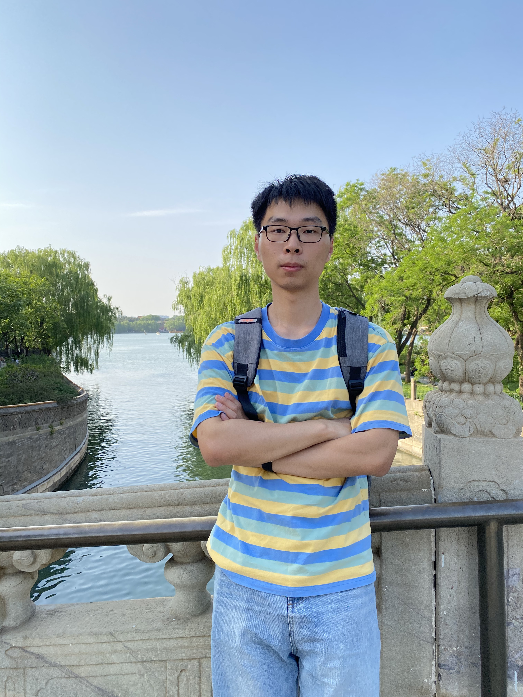

Yuanlin Duan (段源林)
Artificial Intelligence,
|
 |
About me
I am a senior undergraduate student at the University of Electronic Science and Technology of China
pursuing my B.E degree in Artificial Intelligence. I have a solid foundation in machine learning,
deep learning, reinforcement learning, etc. I have studied the application of reinforcement learning
in the field of quantification under the guidance of Prof. Wen Li and Mentor Xiangyu Sun. This year,
I also cooperated with the most famous medical research center in China, West China Hospital of Sichuan
University, to explore machine learning research in healthcare. I'm a proficient programmer
(independently completed a project of more than 10,000 lines)
Research
Abstractions can be very useful for decision making because they allow the agent to first focus on the high-level aspects of a task before getting bogged down in details. We would like a robot to synthesize abstractions — state abstractions (predicates), action abstractions (skills), and task abstractions (relevant objects) — that are most useful for planning in its specific domain. We learn neuro-symbolic and relational state and action abstractions from demonstrations. The abstractions are explicitly optimized for effective and efficient bilevel planning. We learn neuro-symbolic skills with goal-conditioned policies from demonstrations and symbolic predicates. The learned skills can be used with bilevel task and motion planning techniques.
My research interests include Reinforcement Learning, Machine Learning in healthcare,
Quantitative trading, etc.
Learning Abstractions for Robotic Planning
Learning State and Action Abstractions
Tom Silver*, Rohan Chitnis*, Nishanth Kumar, Willie McClinton, Tomas Lozano-Perez, Leslie Kaelbling, Joshua Tenenbaum
AAAI, 2023. Also appeared at RLDM, 2022 (Spotlight Talk).
[BibTeX]
[Code]
[PDF]

Tom Silver, Ashay Athalye, Joshua Tenenbaum, Tomas Lozano-Perez, Leslie Kaelbling
Conference on Robot Learning (CoRL), 2022
[BibTeX]
[Video]
[Code]
[PDF]
News
[May. 2023] I will go to Rutgers University for my PhD study
[Jun. 2022] Begin my research in General Medical Center of West China Hospital, Sichuan
University
Experience
-
Advisor: Dr. Dongze Li
General Medical Center of West China Hospital
Jun 2022 - Present, Chengdu, China
Research Assistant | West China Hospital, Sichuan University
Selected Awards
Best Camper of ByteDance Technical Training Camp, 2021
Pacesetter Student Scholarship, 2020-2021
Pacesetter Student Scholarship, 2019-2020